A systems-design study of Happy Faces Foundation's women artisans in Karnali, looking for small changes that lead to significant outcomes. In-situ research, stakeholder mapping, personas, causal loops and four leverage points.
Place
Karnali, Vadodara district, Gujarat
Framework
Leverage points (Donella Meadows)
Tools
Miro · Figma
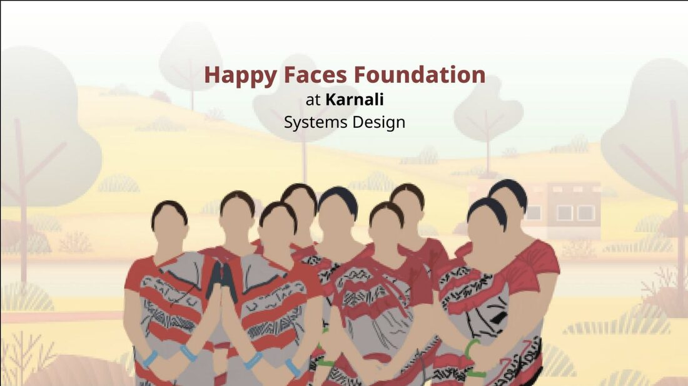
01
Project brief
This project aims to conduct in-situ research and mapping at Karnali, a region known for its unique ecological, social, and cultural aspects. The primary objective is to gather data and insights to find leverage points in system by Donella Meadows which will include leverage points and plausible frameworks for design for sustainability.
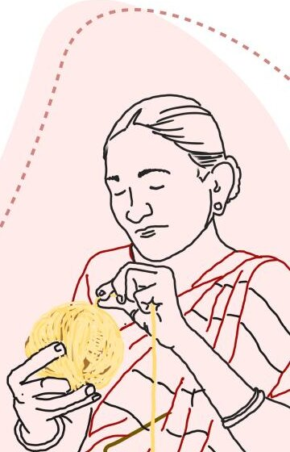
02
About Karnali
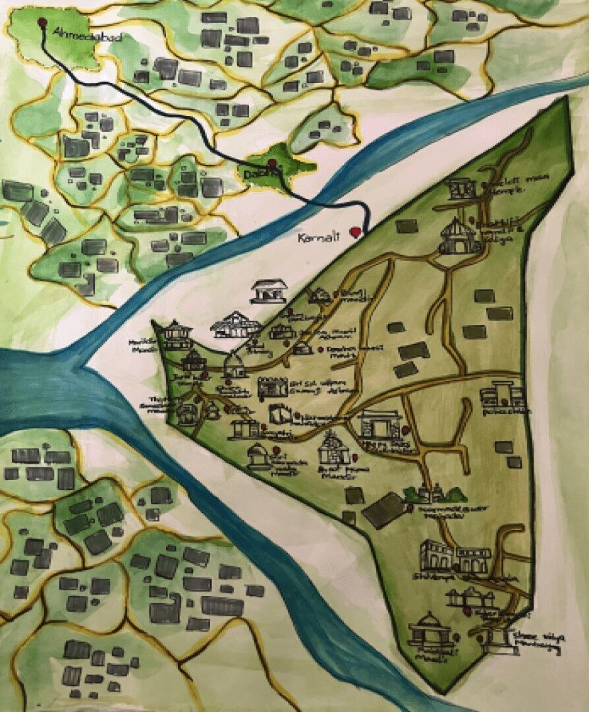
Hand-painted map of Karnali.
Karnali is a captivating temple town located in the Vadodara district of Gujarat, India. It is known for its numerous temples, cultural heritage, and the presence of three rivers, including the renowned Narmada River. The village attracts devotees and tourists, contributing to the local economy through religious tourism.
The rivers that flow through Karnali offer livelihood opportunities, such as farming and boat rowing, as well as celebration of carnivals near the waterways. The village's history is deeply rooted in the customs and traditions of its residents, who have nurtured Karnali for generations.
Geographical analysis
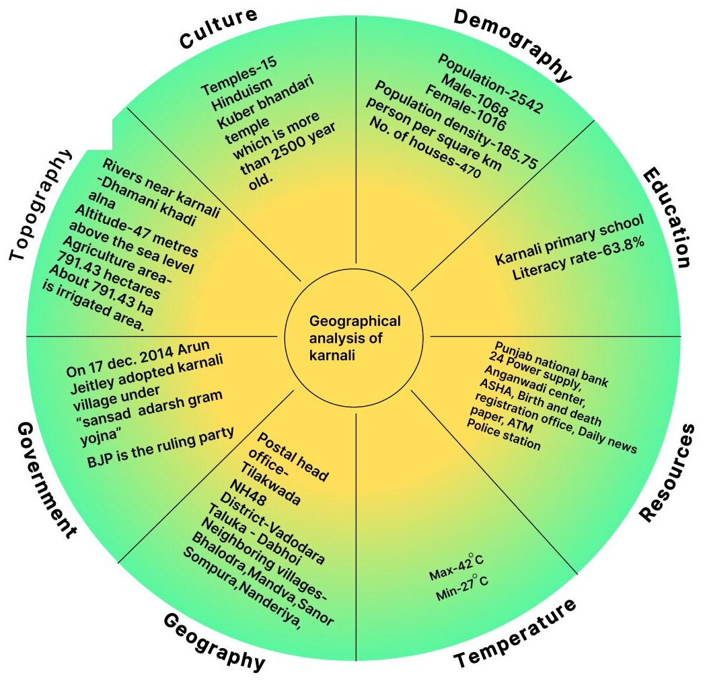
Geographical analysis of Karnali across eight lenses.
03
About HFF
The Happy Faces Foundation is a notable NGO dedicated to empowering women in the village of Karnali, located in the Vadodara district of Gujarat, India. The foundation operates with the mission of improving the lives of women by providing them with employment opportunities and fostering their well-being.
The primary focus of the Happy Faces Foundation is to create sustainable livelihoods for women in Karnali. The foundation achieves this by training and employing women in the art of macrame production. Macrame is a traditional craft that involves knotting and weaving threads to create intricate and beautiful products. By working on macrame products, the women not only preserve a traditional craft but also generate income for themselves and their families.
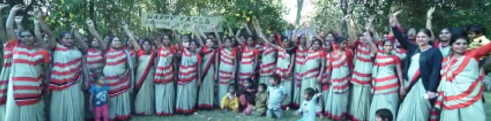
The women of Happy Faces Foundation.
04
Stakeholders mapping
Stakeholder mapping refers to the process of identifying and categorizing the various actors or individuals involved in a particular situation, project, or system. It helps to understand the roles, relationships, and interactions among different stakeholders, enabling a clearer understanding of the overall context and facilitating effective communication and decision-making.
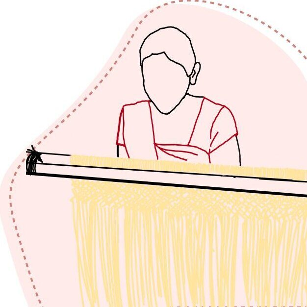
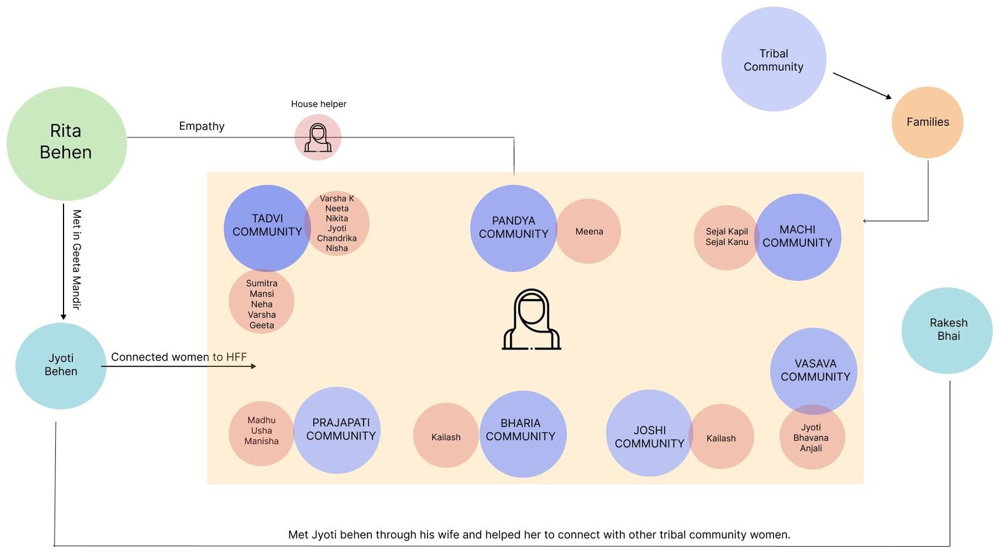
Stakeholder map: how the women of the tribal communities connect to HFF.
Roles
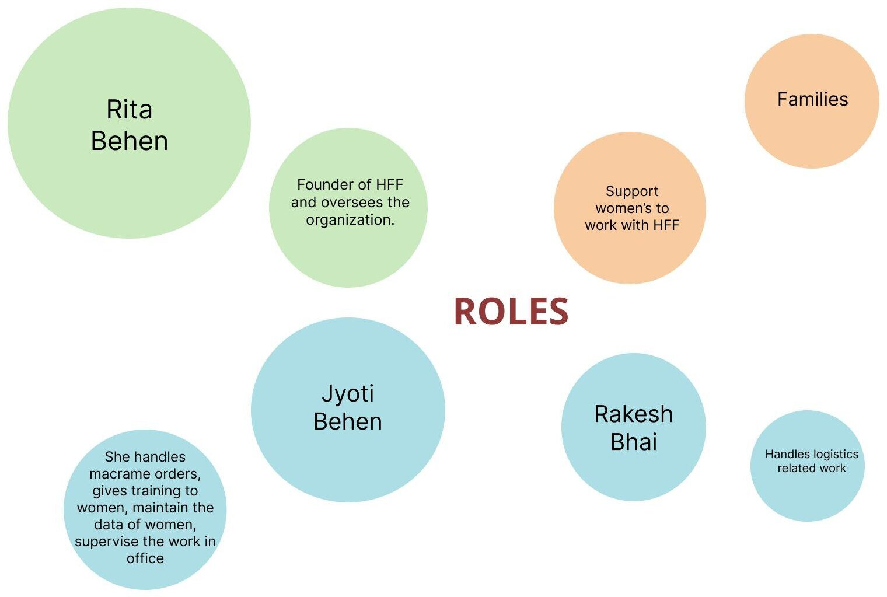
Roles of the main stakeholders.
05
Line of inquiry
Employee interview: the nine questions that guided the research.
What is demography of HFF's employees in Karnali?
What is their educational history?
What is their family background?
What is their economic condition?
How did their relationship with HFF start?
What is their key motivation for joining HFF?
What is their perception of HFF?
How strong is their relationship with HFF?
What impact has HFF caused on them and their life?
06
Insights
Age & motivation to work
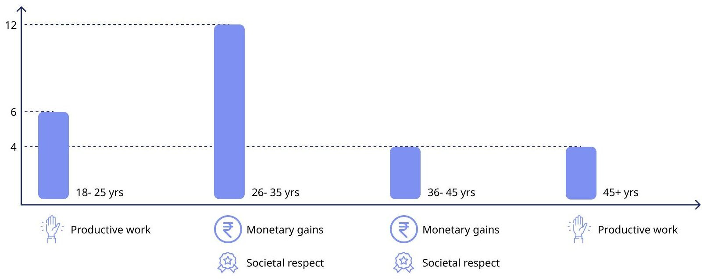
Productive work motivates the youngest and oldest groups; monetary gains and societal respect motivate the 26–35 and 36–45 groups.
No. of earners in family, domestic stability & HFF's image
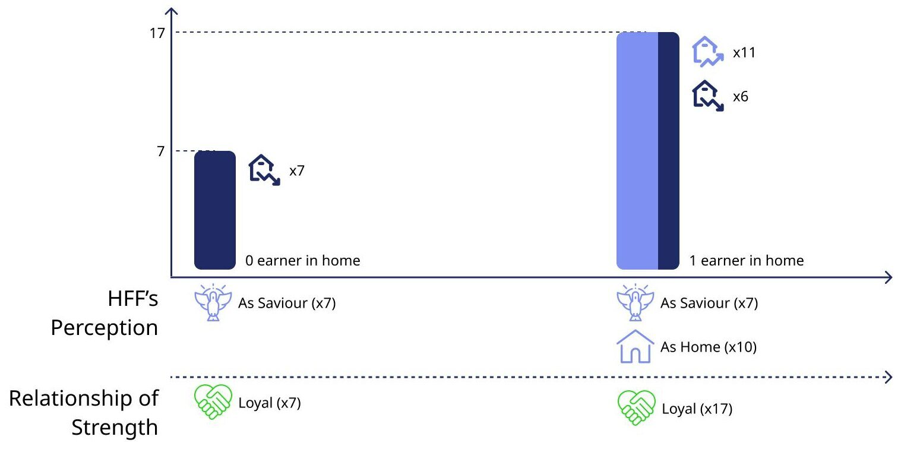
HFF is seen as a saviour and as a home, and the relationship is described as loyal.
How employees got into HFF
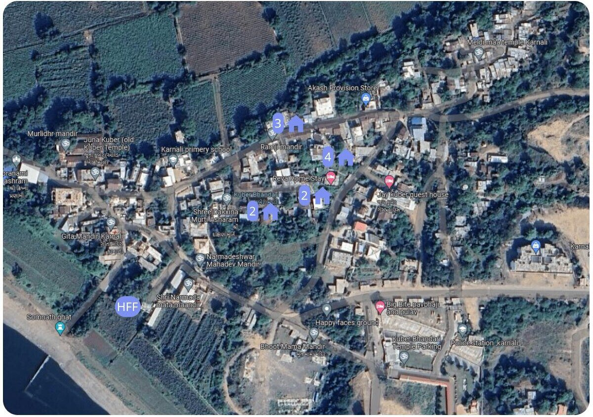
Locations marked on the Karnali village map.
07
Personas
Chandrika Behen Tadvi
Age
20 yrs
Gender
Female
Marital status
Unmarried
Education
12th std
Members in family
5
Interest
She has an interest in working with macrame, her only source of income is working at HFF.
Motivation
Working with HFF · 2 years
She is self-assured and independent. According to her she didn't want to take money from her parents and she want to support her financially. Also, HFF provides her to develop new skill and work in open environment.
Sejal Behen Machi
Age
33 yrs
Gender
Female
Marital status
Married
Education
8th std
Members in family
4
Interest
She is interested in learning new skills in macrame and making Nasta and is also source of income for her.
Motivation
Working with HFF · 5 years
She feels independent and motivated. Her motivation to work at HFF is that she wants to support her family financially. According to her, HFF provides her opportunities to use her skills and gives her the confidence to be independent.
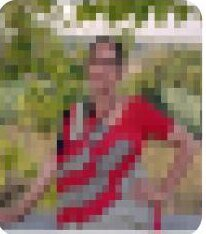
Chandrika Behen Tadvi
Age
66 yrs
Gender
Female
Marital status
Widow
Education
10th std
Members in family
7
Interest
She is interested in working with macrame and learning new skills.
Motivation
Working with HFF · 5 years
She feels happy and motivated while working with HFF. She wants to utilise her leisure time. According to her, HFF is family, and she likes to work in an HFF environment.
08
A day in the life
Morning
Noon
Afternoon
Evening
Night
Where?
Home
HFF Karnali
Home
HFF Karnali
Home
What?
1. Preparing kids for school 2. House chores
Macramé knotting
Cooking lunch
Macramé knotting
Cooking dinner
Who with?
1. Children 2. Husband
HFF co-workers
Alone
HFF co-workers
Family
Benefits?
1. Inner peace 2. Happiness
1. Economic 2. Community
1. Inner peace 2. Happiness
1. Economic 2. Community
1. Inner peace 2. Happiness
Pain points?
Difficult to manage
1. Economic 2. Community
Cold food for children
Separation from child
House chores after a long day
09
Events & underlying factors
Events
The making of macrame products at HFF Karnali
Bags & Straps (New!)
Bells Candle Jars
Coasters & Trivets
Curtain Tie-backs
Cushion Covers
DIY Craft Kits
Placemats Plant Hangers
Table Runners
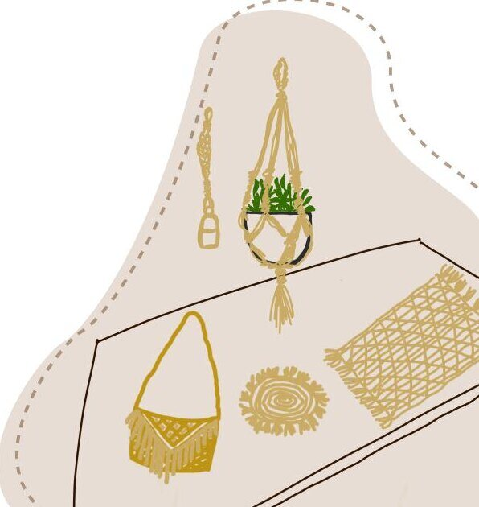
Underlying factors (invisible aspects)
Skill development and training
HFF may invest in training programs to enhance the skills and knowledge of macramé artisans. This helps improve the quality of their products, increase their earning potential, and contribute to their personal and professional growth.
Community building
HFF may foster a sense of community among macramé artisans, encouraging collaboration, knowledge sharing, and support networks. This can lead to a stronger macramé community, cultural preservation, and the exchange of ideas and techniques.
Social impact
HFF's initiatives aim to empower disadvantaged communities by providing economic opportunities through macramé. They work with marginalized individuals or communities, supporting them with skills training, fair wages, and improved livelihoods.
Sustainable practices
HFF prioritize sustainability by using eco-friendly and ethically sourced materials such as jute ropes in their products. They focus on zero waste, and supporting environmentally conscious production processes with an intent of reduction of carbon footprint.
10
Systems mapping
Feedback loops
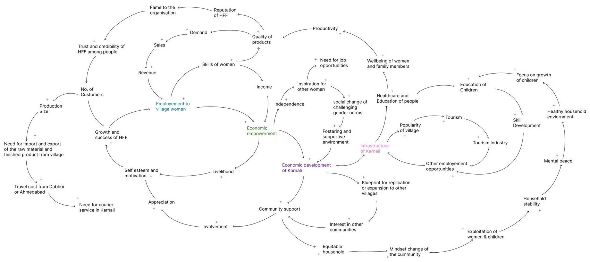
Click to enlarge. The causal loops connecting employment, income, community support and the village's growth.
Gap identification
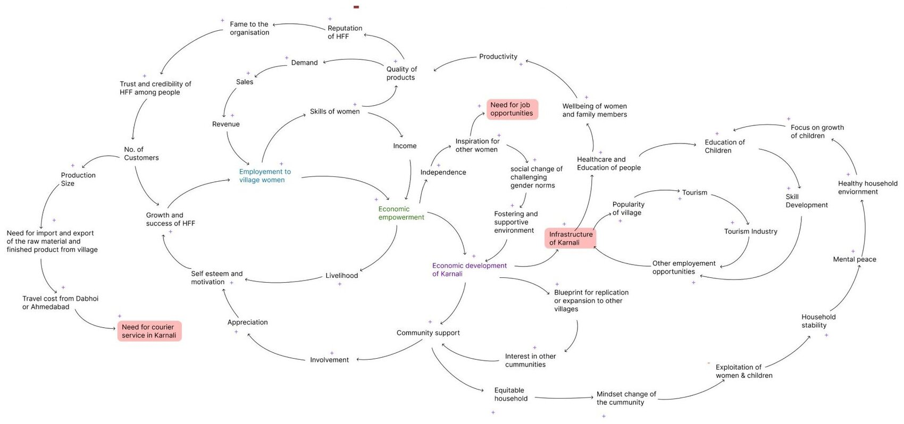
Click to enlarge. Gaps highlighted: need for job opportunities, need for courier service in Karnali and infrastructure of Karnali.
SWOT analysis
SStrengths
An eco system which empowers women
Generate income sources for women
Establishing their identity in society
WWeaknesses
Less women are working as compare to the population of women in Karnali
OOpportunities
HFF can add more product range in Karnali branch
TThreats
Drop in demand of macrame
11
From ideas to leverage points
Triple bottom line
Ideas were checked against three lenses: viable, bearable and equitable.
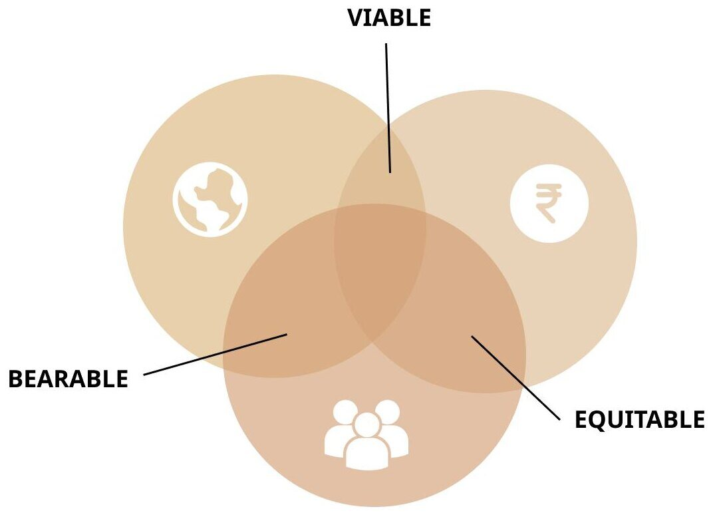
Brainstorming
Vocational centersBetter InfrastructureVariety of ProductsSelling the product in local marketNew product lineDay care centreOpen house eventsPension schemeESOPsAlternate material useFamily planning programMental wellness programExhibitionsShort films as product advertVillage tourismLocal festival based merchandiseNew officeChild education scholarshipsPart-time work and education sponsorshipEducational workshopsEV as transport alternativeCustomized ordersNew QA at KarnaliChildren library at KarnaliToy station at KarnaliCollaboration with other NGOsExpansion to new villageEmployee recognition awards
Bottleneck model
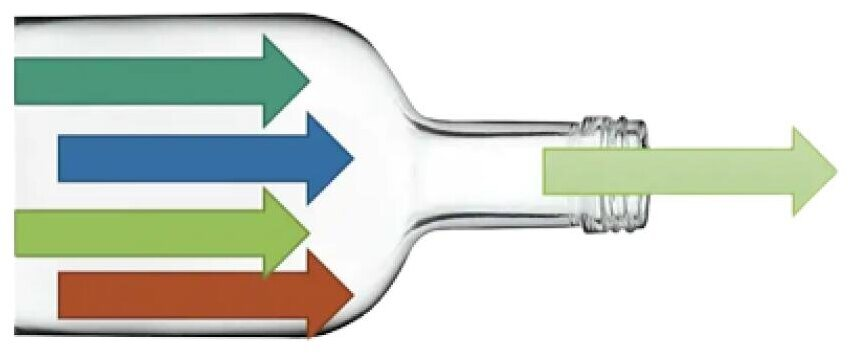
The bottleneck model is a framework used to filter out important ideas in the idea generation process. It helps prioritize and focus on the most promising and impactful ideas while eliminating less relevant or feasible ones.
12
Where small changes can lead to significant and desired outcomes
Receiving raw materials and submission of final product
Leverage point identified: increased carbon emission during the process of shipments.
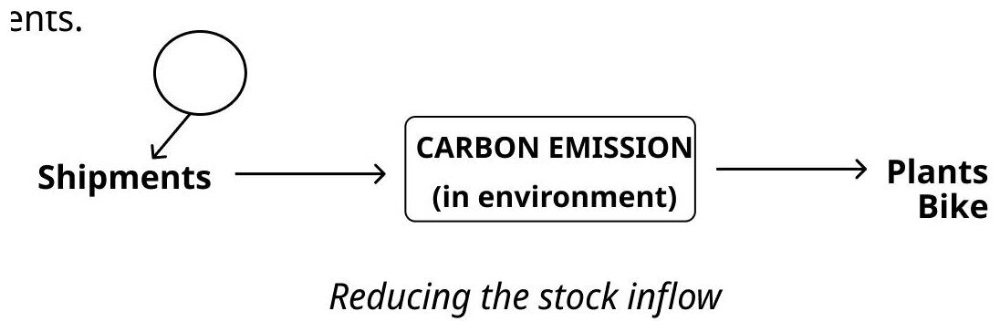
Reducing the stock inflow.
Intervention: providing a carbon neutral shipping method such as EV in Karnali to receive and drop couriers at Dabhoi.
Planet & People
Quality check procedure
Leverage point: the final product is given for quality check at the head quarters and if there's any issues with the product, it's given back to the center for repair which results in increase of carbon footprints.
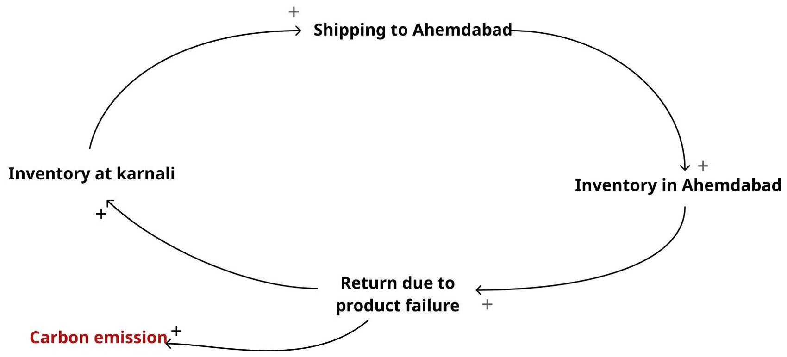
The loop of returns that raises carbon emission.
Intervention: with extensive program of Quality check training at Karnali itself will increase the product quality and decrease the carbon footprint as well include team leaders in decision making which further leads to empowerment.
People
Managing livelihood alongwith HFF
Leverage point: mothers working at HFF often reunite with their children after their work hours, and occasionally express concerns about their kids receiving cold food.
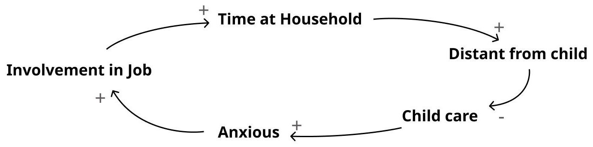
The loop between work, distance from the child and anxiety.
Intervention: providing child care facilities at HFF and utilizing lunch break visits at home.
People
Expansion of the HFF community within Karnali
Leverage point: there are 2,084 people in Karnali, out of which male population is 1,068 while female population is 1,016. Literacy rate of Karnali village is 63.77% out of which 70.88% males and 56.30% females are literate.
Social Inspiration→Positive Perception→Women Joining
Intervention: initiative to boost skill development of the other women in Karnali who are yet not associated with HFF. Awareness program for the village with Role Models and Mentoring campaigns.